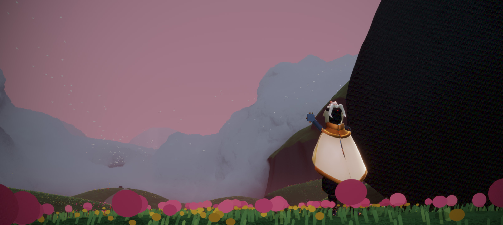

要不断的努力，才能成为更好的自己
.jpg) 我叫杨常虹，我是一名大一的学生，平时爱好运动，比如跑步羽毛球。跟大多数人一样，对未来些许迷茫，当忽然之间脑海里闪现出来一些关于几年前的某个片段时，会情不自禁的回想那个时候的自己，关于那个曾经的所有点点滴滴也渐渐浮现出一些画面，突然拼命的想要去找一点在那个记忆点里的某些东西，寻找的过程中脑海里的思绪早已沉溺在回忆里面，忘了的还有那些忘不了的感触在这一刻全都涌了出来，我觉得最后寻找的结果或许已不重要了，因为这突如其来想要寻找的一些东西的念头，让自己突然变得好安静，莫名的思绪蔓延开来了，它又带我回到了现在已经体会不到的那种怦然心动的时候，仿佛打开了老旧的抽屉，里面装满了当初的成长，青涩，遗憾与那一种想起来会不禁忽然笑出来的感觉，可能想笑的是那时的自己，又或许是笑那带有遗憾结尾的时光，怀念真好。
又一年即将过去了，生活一如既往的推着自己往前走，在行人眼里穿梭，而不时会回头看看的，还是那个仿佛不知在追逐着什么的自己，此刻的空气很好，它不会留下痕迹。
我叫杨常虹，我是一名大一的学生，平时爱好运动，比如跑步羽毛球。跟大多数人一样，对未来些许迷茫，当忽然之间脑海里闪现出来一些关于几年前的某个片段时，会情不自禁的回想那个时候的自己，关于那个曾经的所有点点滴滴也渐渐浮现出一些画面，突然拼命的想要去找一点在那个记忆点里的某些东西，寻找的过程中脑海里的思绪早已沉溺在回忆里面，忘了的还有那些忘不了的感触在这一刻全都涌了出来，我觉得最后寻找的结果或许已不重要了，因为这突如其来想要寻找的一些东西的念头，让自己突然变得好安静，莫名的思绪蔓延开来了，它又带我回到了现在已经体会不到的那种怦然心动的时候，仿佛打开了老旧的抽屉，里面装满了当初的成长，青涩，遗憾与那一种想起来会不禁忽然笑出来的感觉，可能想笑的是那时的自己，又或许是笑那带有遗憾结尾的时光，怀念真好。
又一年即将过去了，生活一如既往的推着自己往前走，在行人眼里穿梭，而不时会回头看看的，还是那个仿佛不知在追逐着什么的自己，此刻的空气很好，它不会留下痕迹。